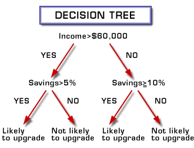
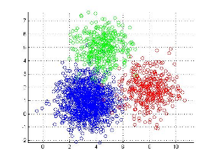

Real World Machine Learning
Presenter Notes
About Me
Harshad
- Me : Senior Data Scientist @ SOKRATI, Pune
- SOKRATI : Advertising domain startup
- My job : Making sense of click stream data
- My experience : advertising world, telecom and BFSI earlier
- My tools : Python, R and Clojure
Presenter Notes
Conference Agenda
Machine learning is not only about mathematical algorithms or tools or vizualizations or business knowledge.
You cannot play a symphony alone, it takes an orchestra
It involves balance of,
- Science (how does the library "fit" a regression?, where does the cost function come from?)
- Process (how do I go from start/data to end/usable model?)
- Engineering (how do I work on billion data points? How do I store them?)
- Art (Black magic.. wodoo! On a serious note, is there a better data model?)
Presenter Notes
ML : popular, identified with extremely diverse set of ideas Sometimes we miss the forest for the trees Books and courses focus on science. Tool and library developers focus on engineering A real world ML problem : needs knowledge of each aspect Workshop and conference themed around the 4 aspects Workshop on science (R) and engineering (solr, aerospike) My talk on some aspects of engineering at conference, many other talks Closing talk on art
Workshop Agenda
Focus on process of machine learning
- Taking a real world challenging problem
- Use science, tools and some intuition
- Create a usable solution for the problem
Presenter Notes
- Process sounds bureaucratic, but useful
- mixture of curiosity and common sense
- driven from past experiences of community
What Process ?
A real world problem
We want to sell a product to customers through telemarketing. The last time we did a carpet bombing exercise. Here are bunch of data points from the effort. Tell us what should do next time. Can you automate that insight generation ?
Flurry of questions...
- Where do we start ?
- What are we supposed to model ?
- What algorithm is better suited for this ?
- Do we have too much data ? How do I know that ?
- Do we have too little data ? How do I know that ?
Presenter Notes
- Typical questions
- Process : systematic way of answering questions
- Other vendors call it something else : SEMMA, CRISP-DM
- Bottom line : useful and practical
Typical Process
- Define objective
- Get data
- Explore
- Model
- Evaluate
- Iterate
- Validate
Presenter Notes
- Not a science, but a good set of best practices
- Not covering get data , conference
Objective
Dataset background
https://github.com/harshadss/my-presentations https://archive.ics.uci.edu/ml/datasets/Bank+Marketing
-
Bank marketing campaign data (S. Moro, P. Cortez and P. Rita, Jun 2014)
-
Popular business problem
-
Can be generalized to many other domains
Presenter Notes
- Those who do not have : download from github or UCI ML repo
- Portugese bank, wants to sell deposit products, generalize to any marketing
- Classic classification problem
First Date!
Read the data
1 2 3 4 5 6 7 | import numpy as np
import pandas as pd
bank_file = './bank-full.csv' # Set to appropriate path
ind = pd.read_csv(bank_file, header = 0, delimiter = ';')
|
Handshake with data
1 2 3 4 5 | ind.shape # How many rows ? How many columns ?
ind.columns # What are the names of columns ?
ind.dtypes # Are the columns read correctly ?
|
Presenter Notes
Second Date!
Checking few observations
1 2 3 4 5 6 7 8 9 10 11 | ind.head()
ind.tail()
# Subsetting in Pandas is different from R
ind[1:10] # Only does rows subsetting
ind.ix[ 1:5, 1:2] # ix is special format for rows + column subsetting
ind.ix[ 1:5, ['marital', 'y'] ] # Can use a list of col names
|
Presenter Notes
- First date with our data
- First hassle : read data, delimiters, can be other sources like db
- Top level view of data : shape, type of variables, dimensions
- Explain vars
- If rows too small, if columns > rows
- mental scan : what the cols are, types (demog, socio-economic)
Drilling Down
Check outcome variable
1 2 3 4 5 | ind['y'].describe() # Is it categorical or numeric ?
ind['y'].unique() # How many unique values ?
ind['y'].value_counts() # Count by unique values
|
Checking numeric variables
1 2 3 4 5 | ind['age'].mean()
ind['age'].median()
ind['age'].describe()
|
Checking numeric variable with skewness
1 2 3 4 5 | ind['balance'].mean()
ind['balance'].median()
ind['balance'].describe()
|
Presenter Notes
- Drill down to individual columns
- If mean and median close : no skewness
- Balance : skewed, outliers
- Tip : Man made variables more likely to have outliers, use median to summarize
Dissecting Single Variable
Quantiles/Percentiles
Percentiles represent percentage positions in sorted data.
99th percentile = 10 indicates that 99 percent of data points are less than or equal to 10
Percentiles are excellent way of summarizing distribution of data
1 2 3 4 5 6 7 | np.arange(0, 1, 0.1)
np.arange(0, 1.1, 0.1) # arange is not right inclusive
dist = ind['balance'].quantile(np.arange(0, 1.1, 0.1)) # Skewed distributions ?
dist
|
Presenter Notes
Introduction to Data Transformations
Information rarely useful as-is, need to transform
1 2 3 4 5 | y_n_lookup = {'yes' : 1, 'no' : 0}
ind['y_dummy'] = ind['y'].map(lambda x: y_n_lookup[x] )
ind['y_dummy'].describe()
|
How does it work ?
- Lambdas : anonymous functions
- Create a dictionary holding transformation
- Map method on DF applies the transformation to every row
- Think of map-reduce in memory
Presenter Notes
- Transformations are very important, Need to quickly identify transformations
- What is being done : map phase of map-reduce in memory
- Lambda is anonymous function : avoids writing separate function
Initial Line of Attack
Set out hypothesis/quesions
-
Does age matter ?
-
Does age matter in combination with marital status ?
-
Do variables like balance, loan, default matter ?
Presenter Notes
- Explain line of attack : demog, socio-economic vars
- Essentially about validating common sense/gut feeling
- Deposits are risk free products : should young people buy it ? not clear
- Motivate need of grouping, aggregation
Grouping and Aggregation
Image courtesy of book Python for Data Analysis, Wes McKinney

Presenter Notes
- Concept similar to mapreduce
- Example of marital status : divide by marital status, average, combine
Grouping and Aggregation
Does marital status affect outcome ?
1 2 3 4 5 | ind['marital'].value_counts()
gb_marital = ind['y_dummy'].groupby(ind['marital'])
gb_marital.mean()
|
Does age affect outcome with marital status ?
1 2 3 4 5 6 7 8 9 10 11 12 13 14 | age_group_names = ['young', 'lower middle', 'middle', 'senior']
ind['age_binned'] = pd.qcut(ind['age'], 4, labels = age_group_names)
ind['age_binned'].value_counts()
gb_marital_age = ind['y_dummy'].groupby([ind['marital'], \
ind['age_binned']] ) # List of keys
gb_marital_age.mean() # Oops!
gb_marital_age.mean().unstack()
gb_marital_age.count().unstack() # Check if enough samples in each group
|
Presenter Notes
- Meaty part
- Even if you have large # of vars : youd have some gut feel on what works
- Stark difference by age + marital status
Outlier Treatments and Missing Data
Detecting outliers
1 2 3 4 5 6 7 8 | top_end = ind['balance'].quantile(np.arange(0.9, 1.01, 0.01)) # Top 10
top_end
import matplotlib.pyplot as plt
plt.plot(top_end.index, top_end.values) # Accesing index
plt.show()
plt.plot(top_end.index, top_end.values)
plt.axis([0.9, 0.99, 0, 20000])
plt.show() # Now a much better plot
|
Removing outliers
1 2 | ind = ind[ind.balance <= 13000 ] # Uses broadcasting
ind.shape # How many left now ?
|
Missing data strategies
- Replace with median/mean of column
- Replace with zero
- Convert to bins and keep missing as separate bin
Presenter Notes
- Why outliers removed : algos are sensitive (e.g. kmeans)
- Missing data is a reality, cannot keep dropping columns
- Other strategies : building model for filling data
Feature Engineering
Why and how ?
- Looking at same information from different view
- Helps treat non-linearities, too many categories
Creating a 'life stage' variable
1 2 3 4 | ind['life_stage'] = ind.apply(lambda x: x['age_binned'] + \
' & ' + x['marital'], axis = 1)
ind['life_stage'].value_counts() # Can eliminate minor categories
|
Presenter Notes
Feature Engineering (continued..)
Creating a ratio variables
- More balance at lower age => better
- Money better off with log (disputable!, just one way of transforming)
How to do it ?
1 2 3 4 5 6 7 8 9 10 | ind['balance_by_age'] = np.log(ind['balance'] + 10000)/(ind['age'])
balance_by_age_labels = ['very low', 'low', 'medium', 'high', 'very high']
ind['balance_by_age_binned'] = pd.qcut(ind['balance_by_age'],
5, labels=balance_by_age_labels)
gb_bal_by_age = ind['y_dummy'].groupby(ind['balance_by_age_binned'] )
gb_bal_by_age.mean().order() # This is a huge insight again!
|
Presenter Notes
- FE is the differentiator
- Making variables useful
- Often the black magic/fun part of ML
Modeling
Model types
-
Supervised learning
-
Unsupervised learning
-
Semi-supervised learning
-
Re-inforcement learning
Presenter Notes
- Endeavour to understand world
- Supervised : guided by past outcomes
- Not covering semi and re-inforcement
Stats Vs. ML Culture
- Stats Culture
- Focus on 'why this model'
- Goodness of fit, hypothesis testing
- Regression models, survival analysis
- Gives basic theory
- AI / ML Culture
- Focus on 'good predictions'
- Cross validations, ensemble of models, bias-variance
- neural networks, tree based models
Presenter Notes
Feature and Target Data
Creating dummies
1 2 3 4 5 6 7 8 9 10 11 12 | feature_names = ind[['life_stage', 'balance_by_age_binned',
'education', 'housing', 'loan', 'default']]
# For every var, create dummies, eliminate one column
# Combine all data frames for all variables
df_list = [pd.get_dummies(ind[var], prefix = var).ix[:, 1 : ] \
for var in feature_names] # List comprehension
feature_mat = pd.concat(df_list, axis = 1) # axis = 1 is important!
feature_mat.shape # How many features now ?
|
Create target variable
1 | target = ind['y_dummy'] # Selected a numeric dummy variable
|
Presenter Notes
Introduction to Random Forests
Decision trees
Image from www.siggraph.com

- Focus on predictions, black box models
- Which variable achieves maximum separation ?
- Problem with DTrees : Overfitting
Presenter Notes
(continued..)
Random forests
-
Fit multiple DTrees with random samples of data
-
Introduce randomness in variable selection
-
Prediction by majority vote
Presenter Notes
- Lot of courses cover regression
- Informal intro to random forests
- ENsembles :Focus on 'what data says' rather than modeling natural process
- DTree : Greedily select vars which achieve separation
- Site edwin chens blog
- Example : give data to friend, she asks questions looking at data, gives outcome
Fitting and Simple Evaluation
Fit
1 2 3 4 5 6 7 8 9 10 11 12 13 14 15 16 | from sklearn.ensemble import RandomForestClassifier
rf = RandomForestClassifier(random_state = 42) # Why random state ?
# By the way, why 42?
model = rf.fit(feature_mat, target.values)
# Find feature importance, print it
raw_feature_importance = model.feature_importances_.tolist()
feature_importance = [round(val * 100.0, 2)\
for val in raw_feature_importance] # No space after, before \
print zip(feature_mat.columns, feature_importance)
|
Simple Evaluation
1 | model.score(feature_mat, target.values) # Wow ! But wait..
|
Presenter Notes
Evaluation
Importance of evaluation
- Right metric
- Metrics for classification and regressions
- Right Measurement
Evaluating classifiers
- Precision = (True Positives)/(P)
- Recall = (True Positives)/(P^)

Presenter Notes
- Precision : predicted one, how many actually are ?
- Recall : of all ones, how many covered ?
- Cite Andrew Ngs course for better details
Evaluation (continued..)
1 2 3 4 5 6 7 8 | from sklearn.metrics import classification_report
predictions = model.predict(feature_mat)
print(classification_report(y_true = target.values,\
y_pred = predictions))
np.sum(predictions)
|
Inference ?
-
F score is [ 2 * (P*R)/(P + R)]
-
We are showing only 20 odd to be respondents
-
Out of 20 predicted repondents, about 12 actual , 0.6 precision
-
Of about 5000 respondents covering only 12, 0.003 recall
-
Model looks useless at this point of time!
Presenter Notes
Evaluation and Bias-Variance
Bias Vs. Variance Problem
-
How does the problem arise ?
-
How is it solved in classical regression models ?
-
How Random Forest approaches the problem ?
Key Idea
Test on dataset with no degrees of freedom
Presenter Notes
- Poor fit on train data : features lacking, wrong way to model problem ?
- Variance : student mugging up on exam
- Model fitting is optimization routine : so need degree of freedom = 0
- On train data : I can keep tuning params to achieve good fit
Asymmetric Costs
-
Predicting likely respondents for marketing campaigns
-
Predicting pregnancy
-
Predicting likelihood of nuclear attack and launch pre-emptive strike
Presenter Notes
Iteration/Better Model
1 2 3 4 5 6 7 8 9 10 11 12 13 14 15 16 17 18 19 | from sklearn.cross_validation import train_test_split
trn_feat, tst_feat, trn_tar, tst_tar = train_test_split(feature_mat,\
target.values, test_size = 0.3,\
random_state = 42)
wts = np.array([9 if y == 1 else 1 for y in trn_tar]) # Weights
better_rf = RandomForestClassifier(min_samples_split = 10,\
min_samples_leaf = 10,\
n_jobs = -1, verbose = 1)
better_model = better_rf.fit(trn_feat, trn_tar, sample_weight = wts)
print(classification_report(y_true = trn_tar,\
y_pred = better_model.predict(trn_feat)) )
print(classification_report(y_true = tst_tar,\
y_pred = better_model.predict(tst_feat)) )
|
Presenter Notes
- How handled asymmetric : weights
- How handled overfit : min samples (should be higher)
- Marketing campaigns : use sorted list, how much effort is saved etc.
Iteration (continued...)
Inference
-
Slightly better (better recall)
-
But poor precision (we are predicting large # to be respondents)
Actions ?
-
Can trade off precision and recall : change probability threshold
-
Keep tweaking on parameters
-
If not improving significantly : need more features (same as this case)
-
Marketing campaigns : use lift as a metric
Presenter Notes
Introduction to Unsupervised Learning
Idea
- Unlabelled data
- Trying to find structure
Applications
- Customer segmentation
- Topic based classification of documents
- Reducing dimensionality of genomic datasets
Presenter Notes
K-means Clustering
How does it work ?
Image from mathworks

- Distance as a measure of similarity
- EM steps
- Randomly choose centroids
- Assign points to nearest centroids
- Calculate centroids, re-assign to nearest cluster
- Repeat 3 till convergence
Presenter Notes
Example
Customer segmentation on data
1 2 3 4 5 6 7 8 9 10 11 12 13 14 15 16 | from sklearn import preprocessing
econ_data = ind[['age', 'balance']].as_matrix()
econ_data_scaled = preprocessing.scale(econ_data)
from sklearn import cluster
k = 3 # Conventional wisdom of low-middle-wealthy class
kmeans = cluster.KMeans(n_clusters = k)
kmeans.fit(econ_data_scaled)
y_pred = kmeans.predict(econ_data_scaled)
plt.scatter(econ_data_scaled[:, 0], econ_data_scaled[:, 1], c = y_pred)
plt.xlabel('Scaled Age')
plt.ylabel('Scaled Balance')
plt.show()
|
Tips
- Deciding # of clusters is a huge research topic
- More clustering methods available (mini batch k-means, hierarchial clustering)
- Clustering is exploratory and iterative : no good answer
Presenter Notes
- Task : clusters based on socio-economic condition
- Trivial example : only two vars help vizualize
Curse of Unstructured Data
Examples
-
Face recognition
-
Spam filtering, news article recommendations
-
Detect motion in video feed for security concerns
Problems
-
Preprocessing is harder
-
Data model is not easy
Presenter Notes
Vector Space Representation

Representations
-
Text, Document mining ?
-
Image data ?
-
Video data ?
Presenter Notes
- Why is maths good : abstraction
- ML needs vector space : distance, similarity etc
- Text : documents as points
- Image : pixels as axis , NON-LINEAR COMBOS Neural networks
- Videos : not sure, time varying data , 4D space
Real World Tips
-
Avoiding GIGO approach
-
Importance of data model and feature engineering
-
Fallacy of anticausal systems
-
Fallacy of automated no-brains machine learning
-
Means (big data tools) Vs. Ends (insights, usable models)
Presenter Notes
Recap
- Define objective
- Get data
- Explore
- Model
- Evaluate
- Iterate
- Validate